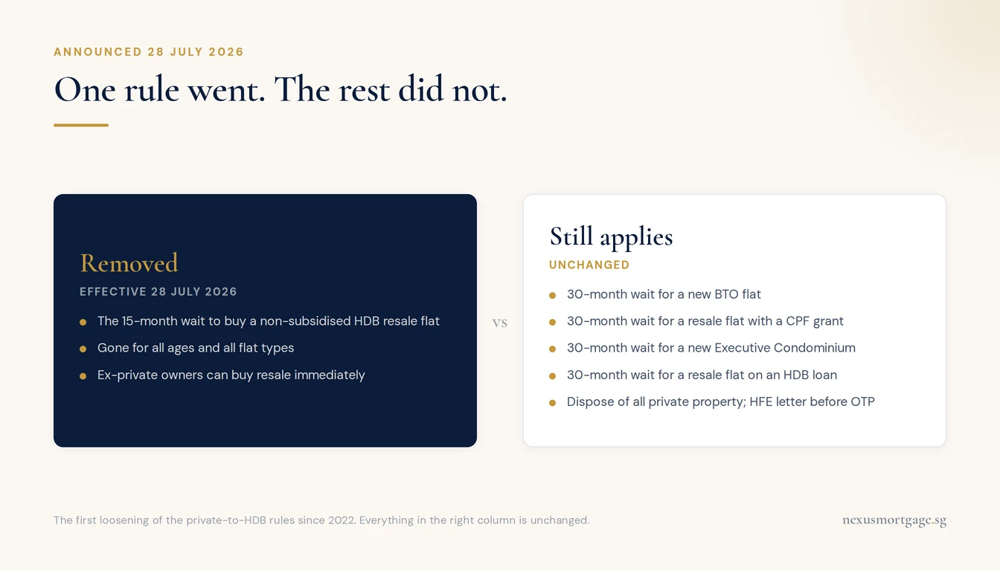
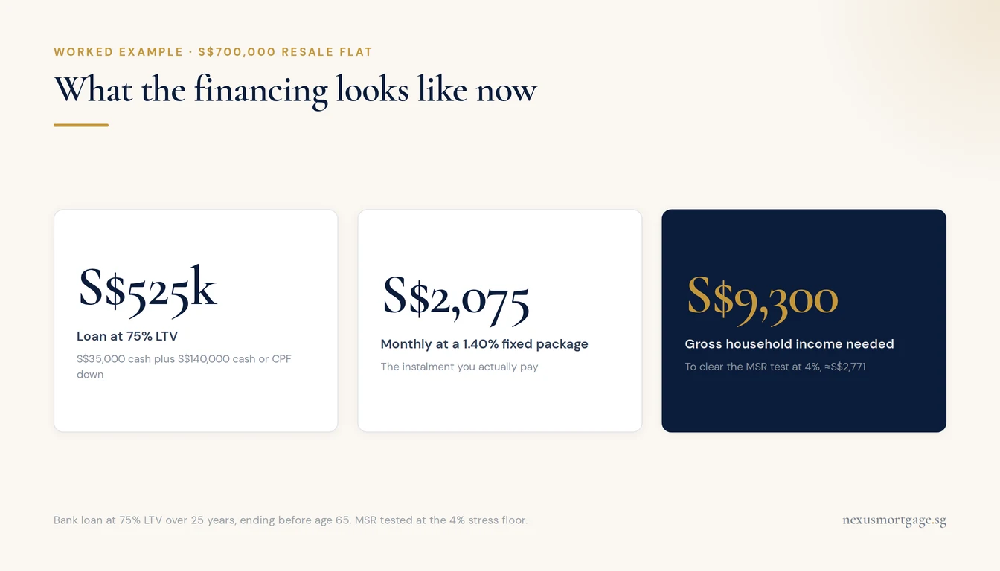

15-Month Wait-Out Period Removed: Private Owners Can Buy HDB Resale Immediately
What Was Announced on 28 July 2026
On 28 July 2026, National Development Minister Chee Hong Tat announced at the Singapore Economic Review Conference that the 15-month wait-out period is removed with immediate effect. The change was confirmed in a joint statement by the Ministry of National Development and HDB.
In plain terms: if you own private residential property, or sold one recently, you no longer need to wait 15 months after the sale before buying a non-subsidised HDB resale flat. The removal covers buyers of all ages and every resale flat type, from 3-room units to Executive Maisonettes.
That is the headline. The detail matters just as much, because several related rules did not change, and one of them decides how you finance the purchase. We cover both below.
What the 15-Month Wait-Out Was
The wait-out period arrived on 30 September 2022 as part of that year's cooling package. Anyone who owned, or had recently sold, private residential property (in Singapore or overseas) had to wait 15 months from disposal before HDB would let them buy a resale flat on the open market. The government was explicit that it was a temporary measure to moderate demand: HDB resale prices had climbed 12.7% in 2021 and another 10.4% in 2022, and cash-rich ex-condo sellers competing for large flats were part of that push.
There was one carve-out from the start: Singapore Citizens aged 55 and above could still buy a 4-room or smaller resale flat without waiting, to keep the right-sizing route open for retirees. Everyone else planned around a 15-month gap, usually with a rental in between and CPF refunds parked in the OA earning interest while they waited.
Why It Was Lifted Now
The measure was always tied to market conditions, and the conditions changed. The HDB Resale Price Index dipped 0.1% in Q1 2026 and 0.3% in Q2 2026, after several quarters of flat or slowing growth stretching back to late 2024. A heavy BTO supply pipeline has given buyers alternatives, and the share of ex-private buyers in the resale market fell sharply during the wait-out years. With prices stabilising, MND judged the demand-moderation job done.
For the resale market, the practical read is that a pool of ex-private buyers who were sitting out their 15 months can now enter immediately. Demand for larger, well-located resale flats (the natural landing spot for right-sizers) is the segment to watch.
What Still Applies: the Rules That Did Not Change

One rule went. Five stayed, and the 30-month HDB loan wait is the one that catches people.
The removal is narrower than the headlines suggest. Here is the full picture:
| Rule | Status after 28 July 2026 |
|---|---|
| 15-month wait to buy a non-subsidised HDB resale flat | Removed for all ages and flat types |
| 30-month wait for a new BTO flat from HDB | Still applies |
| 30-month wait for a resale flat bought with CPF housing grants | Still applies |
| 30-month wait for a new Executive Condominium from a developer | Still applies |
| 30-month wait for a resale flat financed with an HDB housing loan | Still applies |
| Dispose of all private property (Singapore and overseas) within 6 months of completing the resale purchase | Still applies |
| HFE letter before OTP, Ethnic Integration Policy, citizenship and family-nucleus rules | Still apply |
Two of these deserve emphasis. First, the 6-month disposal rule: buying a resale flat while still holding your condo commits you to selling all private residential property within 6 months of completion. Buying before selling can also put ABSD at second-property rates on the table, so sequence the transactions with advice, not on vibes.
Second, the HDB-loan line in that table is the one most coverage glossed over. It changes the financing question completely, so it gets its own section.
The Financing Catch: No HDB Loan for 30 Months
The wait-out removal lets you buy immediately. It does not restore your access to the HDB concessionary loan. Ex-private-property owners remain inside the separate 30-month wait-out that covers subsidised elements, and the HDB housing loan is one of those elements. Sell a condo in August 2026 and buy a resale flat in September 2026, and your financing options are a bank loan or cash. The HDB loan route only reopens 30 months after the disposal.
That is not a bad outcome, but it is a different mortgage conversation (we compared the two routes in HDB loan vs bank loan):
- LTV: a first housing loan from a bank is capped at 75% of price or valuation, whichever is lower, and only if the tenure is 25 years or less and the loan ends by age 65. Breach either and the cap drops to 55%. The remaining 25% is 5% cash minimum plus 20% cash or CPF OA.
- MSR: because the property is an HDB flat, the Mortgage Servicing Ratio caps the monthly repayment at 30% of gross income, tested at the MAS 4% stress floor, on top of the 55% TDSR.
- Rates: bank fixed packages currently start around the low-1.4% range (live comparison on our rates page), against the HDB loan's 2.6%. At today's pricing the bank route is meaningfully cheaper anyway; the trade-off is lock-in periods and rate risk at repricing time.
- Proceeds timing: your condo sale proceeds and CPF refund arrive at completion of the sale. If the buy side completes first, bridge the gap deliberately (a bridging loan is the standard tool, typically around 3-4% for the short gap).
Worked Example: Sell the Condo, Buy a S$700k Resale Flat

The instalment is S$2,075. The number that decides approval is the S$2,771 stress figure.
A couple in their late 40s sells a condo and buys a S$700,000 5-room resale flat right away, on a bank loan at 75% LTV over 25 years:
| Item | Amount |
|---|---|
| Purchase price | S$700,000 |
| Loan at 75% LTV (25-year tenure, ends before 65) | S$525,000 |
| Down payment: 5% cash + 20% cash/CPF | S$35,000 + S$140,000 |
| Buyer's Stamp Duty (payable from CPF OA — your law firm settles it at completion) | S$15,600 |
| Monthly repayment at a 1.40% fixed package | ≈ S$2,075 |
| MSR test repayment at the 4% stress floor | ≈ S$2,771 |
| Minimum gross household income to clear MSR (30%) | ≈ S$9,300/month |
Condo sale proceeds typically cover the down payment and stamp duty with room to spare, which is the whole appeal of right-sizing: a fully-planned move can leave several hundred thousand dollars unlocked from the condo, on top of a smaller and cheaper mortgage. The MSR line is the one that catches people who have shifted to variable or part-time income late in their careers, because the 4% stress test uses gross assessable income, with variable income taken at a haircut.
The removal shortens the timeline from 15 months to immediately. The financing homework is the same as it always was, just sooner.
Who This Actually Helps
- Right-sizers under 55. The 55+ exemption already covered retirees buying small. The removal mainly frees couples in their 40s and early 50s who wanted a bigger resale flat and were locked out entirely for 15 months.
- Ex-owners mid-wait. If you sold private property in 2025 or early 2026 and were counting down your 15 months, your countdown just ended. You can start the HFE application and flat search today.
- Owners planning an exit. If holding costs, an expiring lock-in or an ageing loan were pushing you to sell the condo but the 15-month rental gap made the numbers ugly, the gap is gone. Sell, buy, move once.
- Million-dollar-flat watchers. Ex-private buyers were a visible share of high-end resale deals before 2022 (see our million-dollar HDB flats piece). Expect that segment to firm up first as this pool returns.
Moves to Make Now
- Apply for the HFE letter first. You need a valid HDB Flat Eligibility letter before an OTP can be exercised, and it confirms scheme eligibility, EIP room and your financing basis in writing. Start at HDB's buying-a-flat portal.
- Decide the sequence: sell-then-buy or buy-then-sell. Sell-first avoids ABSD questions and the 6-month forced-disposal clock, at the cost of possibly renting briefly. Buy-first keeps you housed but needs ABSD and bridging planned upfront.
- Get the bank loan pre-approved before you shortlist flats. The 30-month HDB-loan bar means the bank's MSR/TDSR verdict is your budget. An In-Principle Approval takes days and holds for around 30 days.
- Run your own numbers first. The Singapore Mortgage Free Report stress-tests your income against MSR and TDSR at the 4% floor, compares 16 banks live and emails you the full breakdown as a PDF.
Frequently Asked Questions
The 15-month wait-out period for private residential property owners and former owners buying a non-subsidised HDB resale flat. Announced by National Development Minister Chee Hong Tat with immediate effect, jointly by MND and HDB, covering buyers of all ages and all resale flat types.
Yes. The separate 30-month wait-out still applies to new BTO flats, resale flats bought with CPF housing grants, new Executive Condominiums, and resale flats financed with an HDB housing loan. The removal covers only non-subsidised resale purchases without those elements.
No. Buyers who still own private residential property, in Singapore or overseas, must dispose of all of it within 6 months of completing the HDB purchase. Buying before selling can also trigger ABSD at second-property rates, so most buyers sell first or plan the sequence carefully.
Generally not within 30 months of the disposal. The HDB concessionary loan keeps its own 30-month wait-out for ex-private owners, which this change did not remove. In practice you finance with a bank loan or cash, then the HDB-loan route reopens 30 months after disposal.
Up to 75% LTV on a first housing loan, if the tenure is 25 years or less and the loan ends by age 65; otherwise 55%. MSR caps the repayment at 30% of gross monthly income and TDSR at 55%, both at the MAS 4% stress floor. On a S$700,000 flat with a S$525,000 loan over 25 years, roughly S$9,300 of monthly household income clears MSR.
It arrived on 30 September 2022 as a temporary cooling measure, after resale prices rose 12.7% in 2021 and 10.4% in 2022. It was lifted after the market stabilised: the Resale Price Index dipped 0.1% in Q1 and 0.3% in Q2 2026, on the back of heavy BTO supply.
Right-Sizing From Private to HDB? Get the Financing Mapped First
Bank loan is your only route for 30 months after selling private property. We compare 16+ MAS-regulated banks, stress-test your MSR/TDSR and sequence the sale, bridge and purchase — free, in one call.
Check What I Can Borrow →Prefer a personal review? WhatsApp Dan Ler at +65 8752 0859 for a free assessment. Banks pay our fee — you pay nothing.
Or grab the full playbook: Singapore Mortgage Free Report — MSR/TDSR worksheet at the 4% stress floor, 16-bank rate comparison, upfront-cost breakdown and the LTV/tenure trade-off in one PDF.

About the author — Dan Ler has advised on Singapore home loans since 2017 at Nexus Mortgage SG, an independent brokerage comparing 16+ MAS-regulated lenders. Nexus has facilitated 500+ home loans across HDB, EC, private condo and landed property segments. Banks pay Nexus on disbursement, so there is no cost to the borrower.
Further reading
- HDB loan vs bank loan — the 2.6% concessionary rate against bank fixed packages, and who should pick which
- TDSR and MSR explained — the 55% and 30% ceilings and how the MAS stress floor is applied
- Million-dollar HDB flats — the resale segment ex-private buyers head for first
- Buying HDB resale above the income ceiling — the open-market route for high earners
- Free Singapore mortgage report — Dan's full written breakdown with a 16-bank comparison
- The S$16,000 HDB income ceiling: what the 24 August 2026 revision unlocks, and the borrowing-power math behind it
- The November 2026 BTO launch: the six-town line-up and the 25 September HFE deadline
Nexus Mortgage SG is an independent Singapore mortgage advisory. This article is general information, not financial advice. Figures are illustrative and reflect MND, HDB, MAS and IRAS positions as of 1 August 2026; rules and bank rates can change. Sources: HDB announcement (27-28 Jul 2026), MND, HDB buying a flat, MAS Notice 645 (TDSR), IRAS ABSD, CPF Home Ownership.